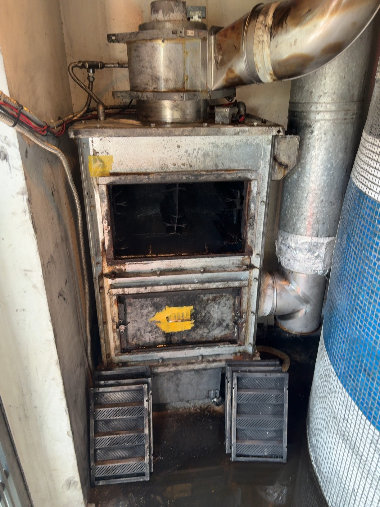

A
普通火災
木材・紙・布
段ボール・カーテン
◯
水でOK粉末消火器も有効
いつか起きる。
その時のための準備
今わかる範囲で書いてください
「わからない」と書いて構いません
この場は、確認する場です
書けなかったこと自体が、今日の確認ポイントです。
Q1・記述
投票結果を画面共有して確認
Q2・記述
投票結果を画面共有して確認
Q3・記述
投票結果を画面共有して確認
Q4・選択
この数字は、後半でもう一度出てきます
ピークが終わったキッチン。
明日のランチの仕込みと、
ピークの片付けに追われている。
揚げカスを放置したまま、フライヤーの自動温度管理が故障過熱状態が続く
油から炎が上がり、揚げカスにも着火
洗い場のアルバイトが気づき、慌てて水を大量投入→ 水蒸気爆発
先月延期していたダクト清掃→ ダクト内の油に引火し、ダクト火災へ
皆さんのキッチン、ステンレスだらけです。
燃えるものなんて、ほとんどないはずです。
「油」です。
家庭の365日分
飲食店の排気ダクトが1日で吸い込む油煙は、家庭の365日分と言われる
ダクトは天井裏や壁の中を通り、建物の各階へ。
東京消防庁も、排気ダクトを「延焼ルートになるおそれがある」として注意喚起しています。

本来は異常加熱時に水を噴射して、ダクト火災を防ぐ設備。故障・整備不良で、フィルター付近から出火した事例がある
自分の店に何があるか、把握できているでしょうか。
商業施設から罰金。代表・取締役の報酬減額、店長・シェフへの文書注意
代表・担当取締役の報酬減額、店長の減給
担当役員の報酬減額
罰金、報酬減額、減給、文書注意。処分は確かに重いものです。
でも、何よりも重いのは、命が失われること。お客様、スタッフ、そして皆さん自身の命です。
火災は、どれだけ注意していても起きてしまう可能性があります。
警報設備
消火設備
自動消火装置は設置店舗のみ
避難設備
1つでも不備があれば、生存率が著しく低下します
営業の絶対条件
この2つがなければ、そもそも営業できません
消防法8条／所轄消防署へ提出
店長またはシェフが対象
消防法8条／所轄消防署へ提出
そのうえで
時期は一例です。自店の点検日に合わせて確認してください。
設置店舗のみ。薬剤の使用期限も管理
ピザ窯・アクアフィルター等
緊急連絡フローの定期確認
記録に残らない対応は、「やっていた」ことの証明になりません。
間違えると、火を大きくします。
木材・紙・布
段ボール・カーテン
水でOK粉末消火器も有効
フライヤー・天ぷら油
グリスフィルター
水は絶対禁止粉末消火器、または濡れタオルで覆う
コンセント・配線
厨房機器・分電盤
ブレーカーを落とす水は感電・漏電の危険。粉末消火器
モバイルバッテリー
充電器
大量の水で冷却油火災とは対応が真逆
迷ったら、ABC粉末消火器を使ってください
A・B・Cのすべてに対応できます。
フライヤーから火が上がった、その瞬間。まず、大事なことは3つ。
炎が天井に達した、または消火器を10秒以内に確保できないなら、初期消火は断念
10秒の初動のために、ABC粉末消火器が優れた道具になります
ただし無理はしない。「止め忘れた」と店舗に戻るのは絶対NG
「消してから連絡」ではない
消火を試みながら、同時に119番通報させる
指揮官として、瞬時に判断し、その日いるメンバーに役割を与えることが皆さんの仕事です。
一度でもシミュレーションしておけば、パニックやフリーズの中でも動けます。
消防・警察の実況見分に協力。勝手に物を動かさない
担当役員 → 代表 → 総務人事部
双日インシュランス／社内担当：田部井
負傷の有無に関わらず、当日中に体調確認
SNS・メディア対応は個人で行わず、本部に一本化
提出方法
フォームに回答
提出期限
研修実施日から3日以内
記入方法
店舗を確認しながら記入
URLはチャットにも貼ります
未提出の場合、受講済みとして記録されません
該当しないものは「なし」で構いません。気づいたことも記載してください
火災は、一瞬で命を奪います。
だからこそ、それぞれに対しての準備を、常に。
防火は、会社の誰かが管理してくれている話ではなく、
今夜この店にいる、あなた自身の話です。
ご質問があれば、チャットまたは挙手でお願いします。